我们有时会渴望品尝一些简单纯粹的味道——比如薄煎饼、一个水煮蛋、汉堡、香蕉、玉米棒，或者加冰的沙士饮料。有时我们又会惦念那些熟悉的、天然可靠的食物。
食物的魅力有很多，简单纯粹是其中之一。简单的配料、简单的制作。食物不会欺骗，表里如一。
简单的食物未必不精细。我家里至少四本烹饪书的书名里有“简单”一词[7]。简单纯粹是很难实现的。试想一下，一盘自制的加了帕尔玛干酪的黄油酱汁面条是绝对简单的，我仍在研究怎样才能做好。
简单也是数学中的美。数学，结构简单，表述简单，充满魅力，令人着迷。一个简单的几何图形谜题，一个规则简单的游戏，数学的世界只是几个简单的假设——这些足以让你投身其中。它们像一扇敞开的门，透过此门，你会看到一个秀丽可爱而又神秘的花园。
复杂也很迷人，我们会在下一章详述。
简单的食物
芝士蛋糕体现出了简单食物之美。最好的芝士蛋糕（在我看来）是未加装饰的、没有不相关元素的，能品尝到的只是洁白的、或甜或酸口味的牛奶和奶油芝士，可能还会有脆皮。我逐渐找到一种芝士蛋糕的做法，比较薄，是用做馅饼的烤盘烘焙而成，上面是甜的或者酸的奶油冻。我吃过很多莎莉集团（Sara Loe）出的芝士蛋糕，觉得很好吃。但是当时还年轻的我面对纽约式芝士蛋糕时，立刻被深深迷住了，我觉得我吃到的是奶油的精华。
尽管那时我身在波士顿，却又碰到小沃森出售的这种我认为奶油更浓稠，不那么酸，也不那么干，和真正的纽约式一样的芝士蛋糕。我真的很喜欢，我太太也喜欢。但是小沃森（Baby Watson）的蛋糕很贵[8]。我们决定想办法自己做。
做芝士蛋糕的方法多得数不清，很多都自称是“最好的”。但是，以下这个才是真正最好的。
芝士蛋糕
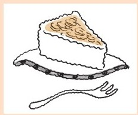
这种蛋糕需要一个大的脱底烤模，3英寸深。一个用于搅拌混合的大碗非常有用。要提前一天做蛋糕这一点很重要（蛋糕也很容易做）。
蛋糕的脆皮外壳需要：
1½杯面粉
½茶匙盐
杯糖
1条无盐黄油
将面粉、糖和盐放在一起过筛（或者用过滤器）。黄油用面团分切机切成小粒，豌豆大小或者更小也可以。面团分切机是个好用的器具，可以将油脂切片。如果你没有这些器具可以用一两把刀，但是耗时更长。食品处理机也比较好用，但是你必须在油脂完全绞碎之前关掉机器。你需要一些豌豆大小的油脂粒。将搅拌好的混合物压盖在烤模底部。烤箱温度调整为180摄氏度进行烘焙，直到香味溢出，变成浅金色（需要15分钟或者更长时间）。要多查看。
填充料：
900克（4块）奶油干酪
1½杯糖
4个鸡蛋
1½杯多脂奶油
1茶匙香草精
将奶酪和糖调成奶油状。一次打开一个鸡蛋。这时大碗搅拌器就派上用场了。打入奶油和香草精，倒入装有烤好的蛋糕壳的烤模里。将烤箱的温度调至150摄氏度，开始烘焙直到填充部分升起膨胀，并且边缘开始变成棕色。这个过程大概需要1个小时，其间要时常查看。烤好时如果轻微摇动蛋糕体会摆动。
关闭烤箱，但是不要立即取出蛋糕。将烤箱的门稍微开启，让蛋糕慢慢变凉。
大概过20分钟，你可以将蛋糕从烤箱中取出进一步冷却。等蛋糕变得更凉时，用保鲜膜盖住进行冷藏。第二天，当你取下塑料膜时可能会发现有些水汽，你可以用纸巾擦掉。
现在我们来说说在芝士蛋糕上浇上糖浆、果酱这个习惯，真是毫无意义。芝士蛋糕温和的口感完全被这些黏糊糊的东西掩盖了。
甜酱可能会让芝士蛋糕有一种独特的酸味。但是我数学化的灵魂更爱（我的）芝士蛋糕简单纯粹的内心，它在不断低语“奶油、奶油、奶油”。蛋糕的外层脆皮提升了纯粹的味道，它与全麦酥饼过分鲜艳的外形不同，安静地述说着“黄油、黄油、黄油”。这柔和美妙的二重奏会被那些酱汁淹没，让人无法体会得到。
但是，如果你想让味道更饱满、丰富，以下这个方法是极好的。
扁桃仁芝士蛋糕
这个方法除了外壳的制作材料如下外，其他的都相同。
¾杯杏仁粉
¾杯面粉
½茶匙盐
¼杯糖
¾份无盐黄油棒
这些混合成糊状，用½茶匙杏仁粉代替香草精。
最后一招：在吃蛋糕前撒上烘烤过的几大汤匙的杏仁片。
简单的谜题
我想和你们说说我和我的学生科林·麦戈伊、我的一个朋友杰瑞·巴特斯和我的儿子弗莱德·亨勒一起做过的一些研究。开始这项工作的动机源自我们对数学简单性的渴望。
几年以前我认为数独游戏（sudoku puzzle）对我来说就好像散落在题目中杂乱无章的数字。
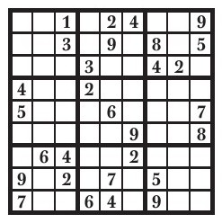
它看上去并不美，而且数值在谜题中起不到任何作用。如果我们用a代替1，b代替2，以此类推
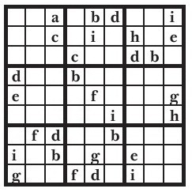
我们会得到相同的谜题。我觉得：
1.数字在谜题中应该是有意义的，可能在某处它们需要相加、相乘或者诸如此类的运算。如果你想要得到数字，你需要进行运算。
2.这些数字开始时应当是不可见的，也就是说不应该有什么数字线索。如果答案中的数字可以从没有数字的谜题线索中产生出来，这样的谜题会更好，更干净。
弗莱德、杰瑞、科林和我都思考过这个问题，并且我们想到可以用奇怪的形状在方格中划分出一些区域，我们可以要求所有区域内的数字之和是相等的。
我们用了一段时间找出了这种类型的谜题。和所有好的谜题一样，我们的谜题也必须有一个独特的解法。我们曾经尝试过的那些谜题不是没有答案就是有很多个答案。最后我们找到了这个，一个6×6迷宫格：
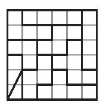
没有数字，难道不美吗？
行与列的解题规则与数独相同——数字不能重复。对于6×6迷宫格，你能使用的数字只有1、2、3、4、5和6，每一行、每一列中每个数字只能出现一次，并且每一个区域内的数字之和必须相等。
你会如何解开这样的谜题呢？你怎么知道是哪些数字？
解题的关键在于你可以计算方格中所有数字的和。任何一行的数字之和是
1+2+3+4+5+6=21
这就意味着整个正方形（6行）中所有数字的和是
21×6=126
既然有9个区域，且数字之和相同，那么每一个区域的数字之和必定是
126÷9=14
现在一起来看左下角那个由三个小方格组成的笔直的区域。三个数字相加之和等于14的有以下几种组合形式：
6+6+2、6+5+3、6+4+4、5+5+4
只有6、5、3这个组合符合规则，因为不能在同一列中出现重复的数字。
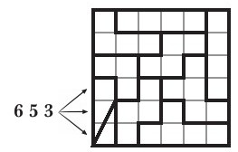
那么在这个三格区域上方的区域会填什么数字呢。这个区域左侧的方格不能填6、5或者3。
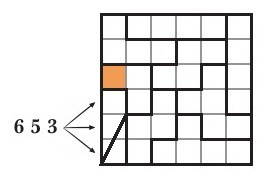
也不能填2，否则这个方格所在区域内剩下的两个方格都只能填6。再稍稍想一下你会发现，填在这一区域的数字只能是两个4和一个6。
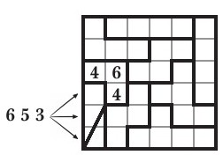
因此，最左侧一列最上边的两个方格一定是1和2。
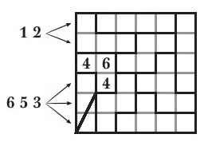
我们由此可以判断左上方这个区域剩下的两个数字一定是6和5。
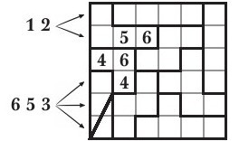
我们解开了谜题，同时可以注意到我们得出一个（数学）证明，证明我们刚刚所说的一定就是答案。
我把剩下的方格留给读者朋友们。可能会更难解，但还是很有趣的。
我不得不承认我们对这些谜题有点着迷。我们称它为“无线索数独”。当然，它们不是真的毫无线索，只是没有数字线索而已。
有人曾提议说，这些谜题其实是“无线索的Ken Ken（贤贤）”[9]。可能这种叫法更准确。聪明方格游戏和数独游戏一样并不优美，而实际上比数独还差劲。它们不仅仅有数字，还有钻营。真是可耻。
无线索的数独谜题很难找到。如果你抱着玩玩的心态就会发现没有2×2的宫格谜题，也没有3×3的。
有1×1的谜题
但是并不怎么有趣。我们找到了一种5×5的宫格谜题。
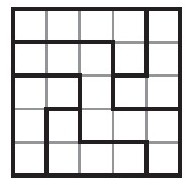
我们为一个4×4的宫格谜题劳心费神了几个月。4×4宫格的每一行相加等于10。
1+2+3+4=10
因此整个宫格的所有数字之和是40。
4×10=40
这就给了我们很多可能性，我们可以有
1个区域，合计40
2个区域，每个区域合计20
4个区域，每个区域合计10
5个区域，每个区域合计8
8个区域，每个区域合计5
10个区域，每个区域合计4
20个区域，每个区域合计2
40个区域，每个区域合计1
其中有些区域很荒谬。显然，我们不能让所有区域合计达到1或2，因为方格中有些数字是3和4。并且如果我们只设一个区域，那么肯定不会只有一个答案。
我们可以将上述可能性削减为以下这些：
2个区域，每个区域合计20
4个区域，每个区域合计10
5个区域，每个区域合计8
8个区域，每个区域合计5
10个区域，每个区域合计4
最后一个是不可能实现的，原因在于：如果每个区域相加之和为4，那么你会怎么处理2？唯一一个方法是两个1相加，2+1+1=4。但是没有那么多的1可以解决所有2的问题。
你也不能让所有区域相加之和为5。这个有点更棘手，因为每一个4都必须和1相匹配：
4+1=5
只有一种方式可以用一个4得到数值之和5。答案可能是这样的：
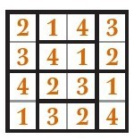
但另一方面，你可以将所有的4和所有的1对换，得到另外一个答案
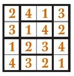
每道谜题必须只有一个答案，独一无二的答案。这是简单之美的一部分。所以现在我们可以将可能性减少到3个：
2个区域，每个区域合计20
4个区域，每个区域合计10
5个区域，每个区域合计8
这三个可能性中的第一个看起来没戏。另外两个倒是合理的。
我们花了很长时间寻找4个区域和5个区域的谜题。最后，我们编写的一个计算机程序证明没有哪个4×4无线索宫格谜题可以分成4个或者5个区域。
想想我们有多惊讶，如此一来，我们发现这个有2个区域的谜题。
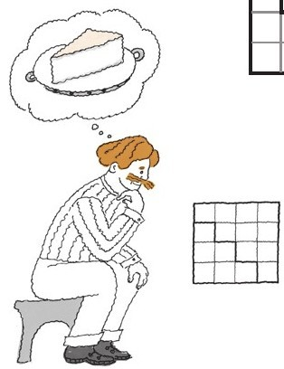
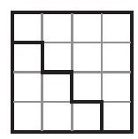
它的答案是唯一的[10]，漂亮！
这一章中的数学和烹饪的简单不是指“容易”，它们的简单是“没有装饰”。简单就好。
复杂也很好……